重要
翻訳は あなたが参加できる コミュニティの取り組みです。このページは現在 90.72% 翻訳されています。
18.2.5. 凡例アイテム
凡例 アイテムは、地図上で使用されているシンボルの意味を説明するボックス、あるいはテーブルです。このため、凡例は地図アイテムに関連付けられます。凡例アイテムは アイテムの作成手順 に従って 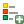
{kind=link}
デフォルトでは、凡例アイテムは全ての利用可能なレイヤを表示しますが、これは アイテムプロパティ パネルを使用して改良できます。 アイテムの共通プロパティ の他に、凡例アイテムには以下の機能があります（ 図 18.27 参照）。
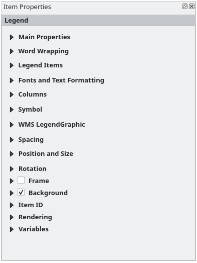
図 18.27 凡例アイテムプロパティパネル
18.2.5.1. メインプロパティ
凡例の アイテムプロパティ パネルの メインプロパティ グループには、下記の機能があります（ 図 18.28 参照）：
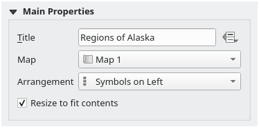
図 18.28 凡例メインプロパティグループ
メインプロパティでは、以下の設定ができます。
凡例の タイトル の変更。 データによって定義された上書き の設定を使用すれば、タイトルを動的に変更することもでき、例えば地図帳の作成時に便利です。
現在の凡例がどの 地図 アイテムを参照しているかの選択。デフォルトでは、描画した凡例アイテムの下にある地図が選ばれます。もし下に地図アイテムが無ければ、 参照マップ にフォールバックします。
注釈
リンクしている地図アイテムの 変数 （@map_id, @map_scale, @map_extent...）は、凡例のデータ定義のプロパティからもアクセス可能です。
凡例内でのシンボルとテキストの配置の設定。 配置 は、 左側のシンボル または 右側のシンボル とすることができます。デフォルト値は使用しているロケール（右から左へと書く言語か、そうでないか）によります。
 大きさを内容に合わせる を使用すると、コンテンツに合わせて凡例を自動的にサイズ変更するかどうかを制御できます。チェックしない場合には凡例のサイズ変更は行われず、ユーザーが設定した大きさに固定されます。サイズが合わないコンテンツはすべて切り取られます。
大きさを内容に合わせる を使用すると、コンテンツに合わせて凡例を自動的にサイズ変更するかどうかを制御できます。チェックしない場合には凡例のサイズ変更は行われず、ユーザーが設定した大きさに固定されます。サイズが合わないコンテンツはすべて切り取られます。
18.2.5.2. Word wrapping
The Word wrapping group of the legend Item Properties panel provides the following functionalities:
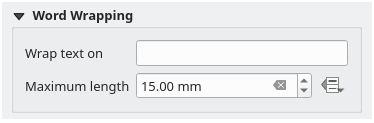
図 18.29 Legend's word wrapping group
指定した文字による凡例テキストの折り返し。凡例テキストにその文字が現れるたびに、改行文字で置き換えられます。
Allow legend text to be automatically wrapped after a set line length (in millimeters), preventing very wide auto-generated legends. The Maximum length can be set as a static or data-defined value, convenient for dynamic layouts which adjust legend size based on for example page orientation or displayed features, or atlases where you may want to tweak the legend appearance on different pages.
Examples:
Control legend width based on layout page orientation
IF( @layout_pageheight >= @layout_pagewidth, 35, 80 )
Set the legend column width when a specific layer is displayed in the linked map
CASE WHEN array_contains( map_get( item_variables('legend_1'), 'map_layer_ids' ), 'a_specific_layer_id' ) THEN 60 END
18.2.5.3. 凡例アイテム
凡例の アイテムプロパティ パネルの 凡例アイテム グループには、下記の機能があります（ 図 18.30 参照）：
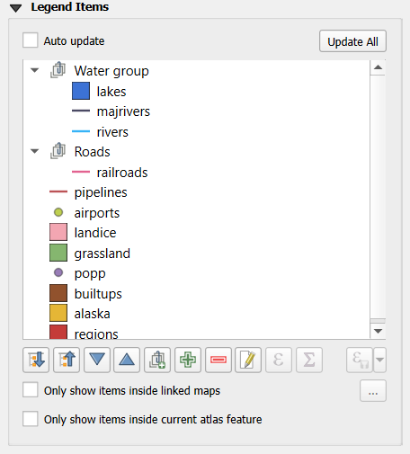
図 18.30 凡例アイテムグループ
- 自動更新 にチェックが入っていると、凡例は自動的に更新されます。When 自動更新 がチェックされていない時には、凡例アイテムをより細かくコントロールすることができます。凡例アイテムのリスト下にある全てのアイコンが有効です。
凡例アイテムウィンドウにはすべての凡例アイテムが一覧表示されており、アイテムの順番の変更やレイヤのグループ化、リスト内のアイテムの削除と復元、レイヤ名とシンボロジの編集、フィルタの追加などができます。
 すべて展開 と
すべて展開 と  すべて畳む ボタンを使って、凡例ツリー内の全てのグループとサブグループをそれぞれ展開または畳みます。これらのボタンを使うには、自動更新 のチェックを外していることを確認してください。
すべて畳む ボタンを使って、凡例ツリー内の全てのグループとサブグループをそれぞれ展開または畳みます。これらのボタンを使うには、自動更新 のチェックを外していることを確認してください。 や
や  ボタンを使用するか、ドラッグ＆ドロップでアイテムの順序を変更できます。 WMS凡例グラフィックは順序を変更できません。
ボタンを使用するか、ドラッグ＆ドロップでアイテムの順序を変更できます。 WMS凡例グラフィックは順序を変更できません。 ボタンを使用して凡例のグループを追加します。
ボタンを使用して凡例のグループを追加します。 ボタンを使用してレイヤを追加し、
ボタンを使用してレイヤを追加し、  ボタンを使用してグループ、レイヤまたはシンボルクラスを削除します。
ボタンを使用してグループ、レイヤまたはシンボルクラスを削除します。 ボタンを使用して、レイヤ名やグループ名、タイトルを編集できます。最初に凡例アイテムを選択する必要があります。アイテムをダブルクリックしても、テキストボックスが開き、名前の変更ができます。
ボタンを使用して、レイヤ名やグループ名、タイトルを編集できます。最初に凡例アイテムを選択する必要があります。アイテムをダブルクリックしても、テキストボックスが開き、名前の変更ができます。 ボタンは、選択したレイヤの各シンボルラベルをカスタマイズするために式を使用します（ データ定義による凡例ラベル 参照）
ボタンは、選択したレイヤの各シンボルラベルをカスタマイズするために式を使用します（ データ定義による凡例ラベル 参照） 式による凡例フィルタ は、レイヤのどの凡例アイテムを表示するかをフィルタリングするのに役立ちます。例えば、異なる凡例アイテムを持つレイヤ（ルールに基づいた、あるいはカテゴリ値によるシンボロジなど）を使って、条件式を満たす地物が無い場合にはそのスタイルを凡例ツリーから除外するためのブール式を指定することができます。ただし、そのような地物はレイアウトの地図アイテムでは残っており、表示されることに注意してください。
式による凡例フィルタ は、レイヤのどの凡例アイテムを表示するかをフィルタリングするのに役立ちます。例えば、異なる凡例アイテムを持つレイヤ（ルールに基づいた、あるいはカテゴリ値によるシンボロジなど）を使って、条件式を満たす地物が無い場合にはそのスタイルを凡例ツリーから除外するためのブール式を指定することができます。ただし、そのような地物はレイアウトの地図アイテムでは残っており、表示されることに注意してください。
凡例アイテムのデフォルトの動作は、 レイヤ パネルツリーを模倣し、同じグループ、レイヤ、シンボロジのクラスを表示しますが、アイテムを右クリックするとレイヤ名を隠したり、グループやサブグループとして表示するオプションがあります。レイヤに何らかの変更を加えた場合は、凡例エントリのコンテキストメニューから デフォルトにリセット を選択することで、変更を元に戻すことができます。
QGISのメインウィンドウでシンボロジを変更したあと、 全て更新 ボタンをクリックすると、印刷レイアウトの凡例要素に変更が反映されます。
- 地図の中にあるアイテムのみ表示 にチェックを入れると、リンクした地図に表示されている凡例アイテムのみが凡例にリストされます。複数のマップがある場合、 ... をクリックしてレイアウトから他のマップを選択することができます。このツールは 自動更新 が有効なときに利用できます。
ポリゴン地物を使用して地図帳を作成する際に、現在の地図帳地物の外にある地物の凡例アイテムをフィルタして除外できます。これを行うには、
現在の地図帳地物の内部のアイテムのみを表示する オプションにチェックを入れてください。
{kind=link}
データ定義による凡例ラベル
により、与えられたレイヤの各シンボルラベルに 式 を追加できます。新しい変数（ @symbol_label 、 @symbol_id と @symbol_count ）は、凡例エントリを操作する上で役立ちます。
例えば、 regions レイヤがあり、 type フィールドで分類されているとしましょう。この凡例の各クラスに、 Borough (3) - 850ha のように地物の数と面積を追加できます：
凡例ツリー内で設定したいレイヤのエントリを選択します。
- ボタンを押し、 式文字列ビルダ ダイアログを開きます。
以下の式を入力します（ シンボルラベルは編集されていないことを仮定しています ）:
format( '%1 (%2) - %3ha', @symbol_label, @symbol_count, round( aggregate(@layer, 'sum', $area, filter:= "type"=@symbol_label)/10000 ) )OK を押します
凡例をカスタマイズする
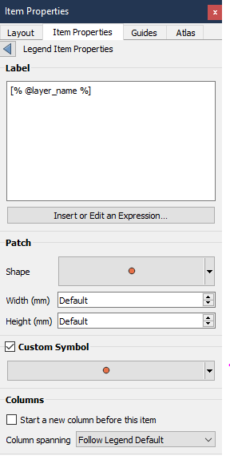
凡例アイテムは 凡例アイテムプロパティ で個別にカスタマイズすることもできます。しかし、これらのカスタマイズは 自動更新 が無効になっている場合のみ可能です。
Double-clicking on an item or pressing Edit selected item properties
allows for further customization.
ラベル
すべてのアイテムタイプについて、 式の挿入・編集 を使って式を入力または挿入することでラベルのテキストを変更することができます。式は[%式 %]記法を使ってアイテムのラベルの任意の場所に直接追加することもできます。
カラム
凡例プロパティは、列分割を特定のアイテムの後またはレイヤのすべてのシンボルに強制的に発生させることによって、列分割の動作を制御することもできます。このウィジェットではレイヤを基にレイヤとその子の自動分割を許可またはブロックすることもできます。
パッチ
シンボルを持つアイテムの場合、凡例アイテムプロパティでシンボルが占有できる最大の高さと幅を指定できます。
ベクタシンボルの場合、シンボルにカスタムシェイプを指定することができます。シェイプは通常、単純な平面でジオメトリを表現する式で定義されますが、これらのシンボルはスタイルマネージャに保存して後でインポートすることもできます。各ジオメトリタイプのデフォルトシンボルもスタイルマネージャで制御できます。
カスタムシンボル
カスタムシンボルはベクタシンボルにも指定できます。これは特定のシンボルのレンダリングを微調整したり、凡例でそのシンボルを強調したり、真のシンボルのプレビューから独立したシンボルを持つのに便利です。このカスタムシンボルは凡例シンボルを上書きしますが、指定されたシンボル パッチ を考慮します。
18.2.5.4. フォントとテキストフォーマット
凡例の アイテムプロパティ パネルの フォントとテキストフォーマット グループは、下記の機能があります:
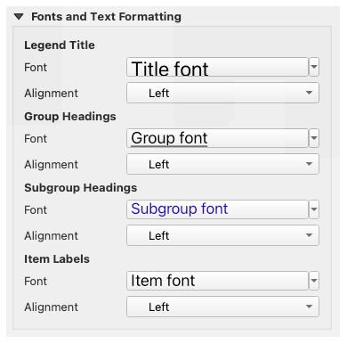
図 18.31 凡例フォントプロパティ
凡例アイテムの凡例タイトル、グループ、サブグループ、アイテム（地物）のフォントは、text formatting の全ての機能（フォントの間隔制御、混合HTMLフォーマット、カラーリング、混合、背景、テキストバッファ、シャドウ、...）を提供する font selector ウィジェットを使って変更することができます。
これらの各レベルで、テキストの 整列 の設定ができます。設定値には、 左 （左から右に文字を書くロケールでのデフォルト）、 中央 、または 右 （右から左に文字を書くロケールでのデフォルト）があります。
18.2.5.5. カラム
凡例の アイテムプロパティ パネルの カラム グループでは、凡例アイテムを複数の列にわたって並べる設定ができます：
カウント（Count）
 フィールドに列の数を設定します。この値は、例えば地図帳地物や凡例のコンテンツ、フレームのサイズ等に応じて動的に変更させることもできます。
フィールドに列の数を設定します。この値は、例えば地図帳地物や凡例のコンテンツ、フレームのサイズ等に応じて動的に変更させることもできます。- 等幅 は、凡例の列幅がどのように調整されるかを設定します。
- レイヤを分割 オプションは、カテゴリ値や連続値によるレイヤの凡例を列にまたがって分割することができます。
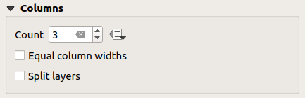
図 18.32 凡例のカラムの設定
18.2.5.6. シンボル
凡例の アイテムプロパティ パネルの シンボル グループでは、凡例ラベルの横に表示されるシンボルのサイズを設定します。以下の設定ができます：
シンボル幅 と シンボル高さ の設定
マーカーの 最小シンボルサイズ と 最大シンボルサイズ を設定します:
0.00mmは値が設定されていないことを意味します。- Draw stroke for raster symbols: this adds an outline
to the symbol representing the band color of the raster layer; you can set
both the Stroke color and Thickness.
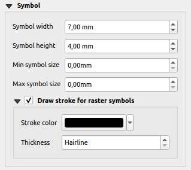
図 18.33 凡例のシンボル設定
18.2.5.7. WMS LegendGraphic
凡例の アイテムプロパティ パネルの WMS LegendGraphic セクションは以下の機能を提供します（ 図 18.34 を参照）：
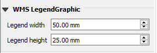
図 18.34 WMS LegendGraphic
WMSレイヤを追加して凡例アイテムを挿入すると、WMSの凡例を提供するようWMSサーバーにリクエストが送信されます。この凡例は、WMSサーバーがGetLegendGraphicケーパビリティを提供している場合にのみ表示されます。WMS凡例のコンテンツはラスタ画像として提供されます。
WMSLegendGraphic は、WMS凡例のラスタ画像の 凡例の幅 と 凡例の高さ を調整するために使用します。
18.2.5.8. 間隔
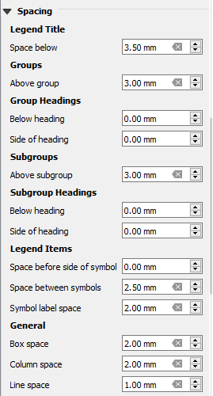
間隔 セクションでは凡例内の間隔をカスタマイズすることができます。間隔は凡例内のアイテムのグループ化とそれらの関係を示すのに大いに役立ちます。
タイトル、グループ、サブグループ、シンボル、ラベル、ボックス、カラム、行の前後の 間隔 はこのダイアログでカスタマイズできます。